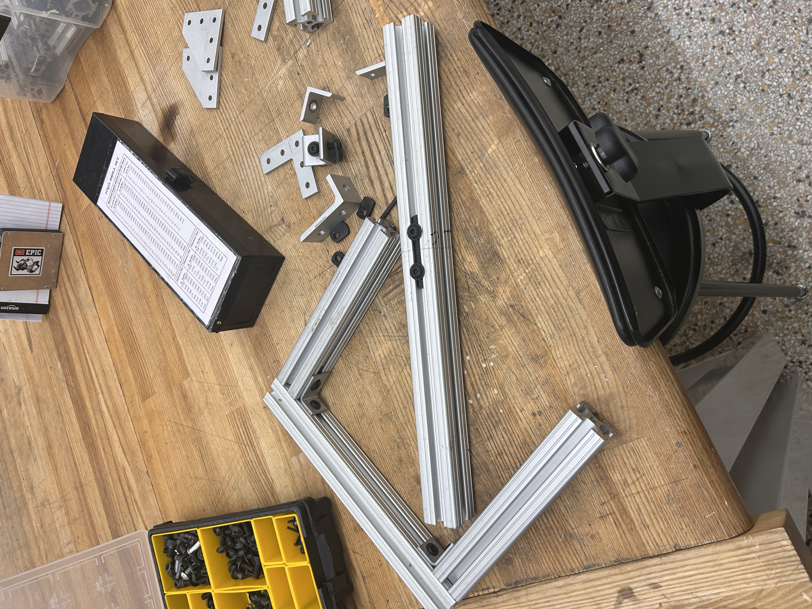
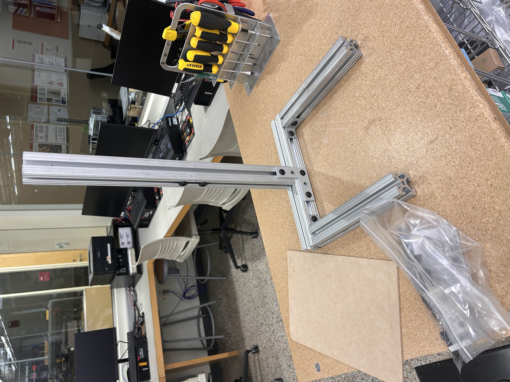
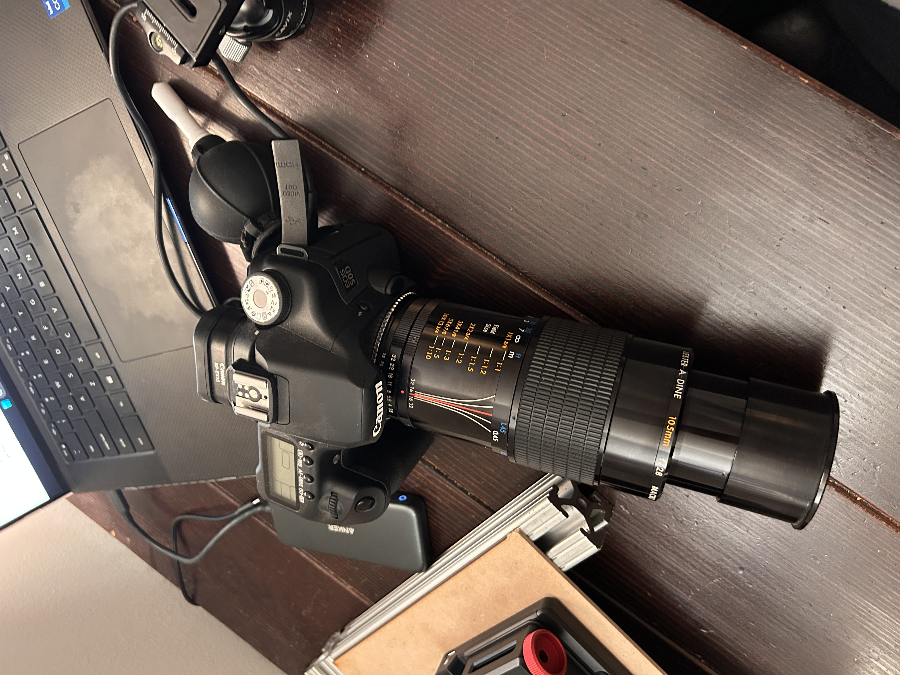
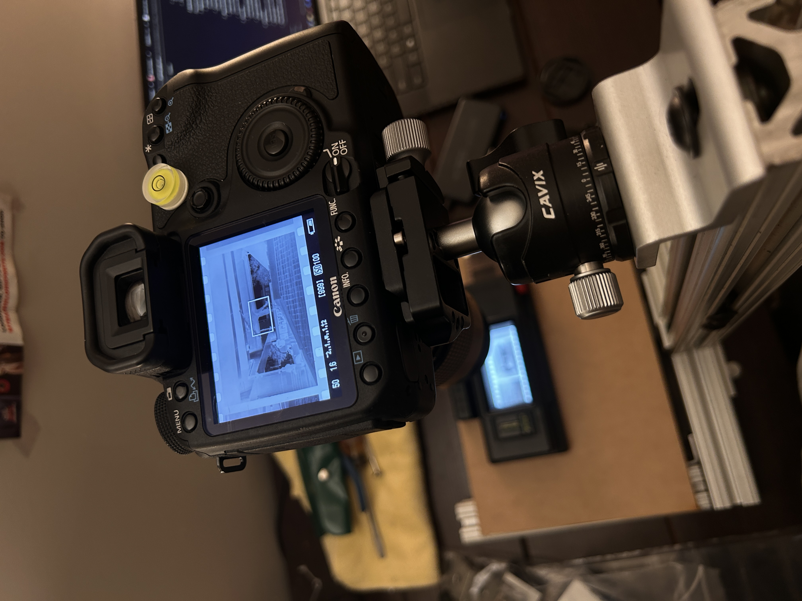
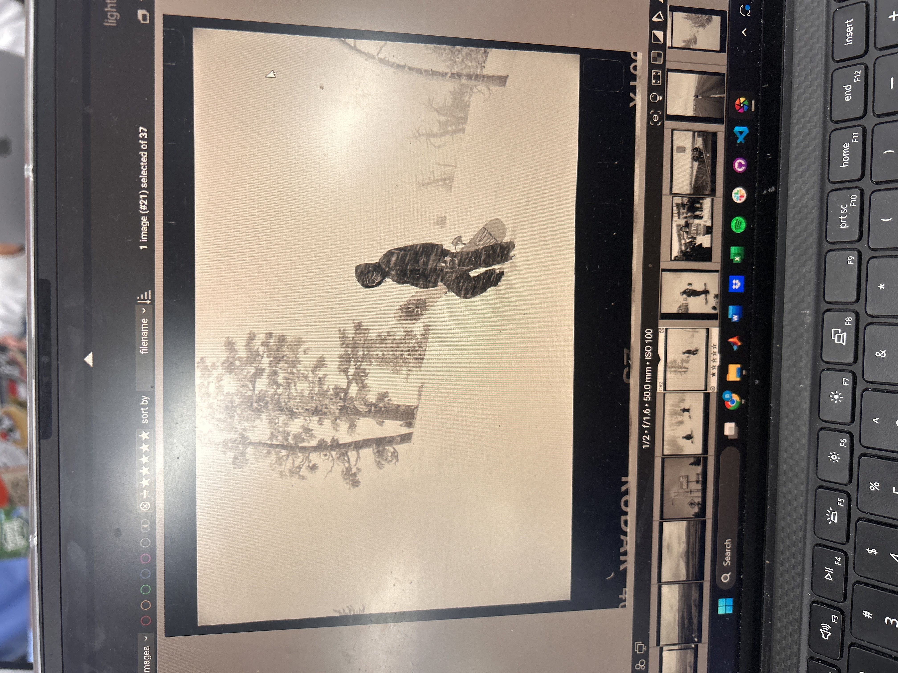
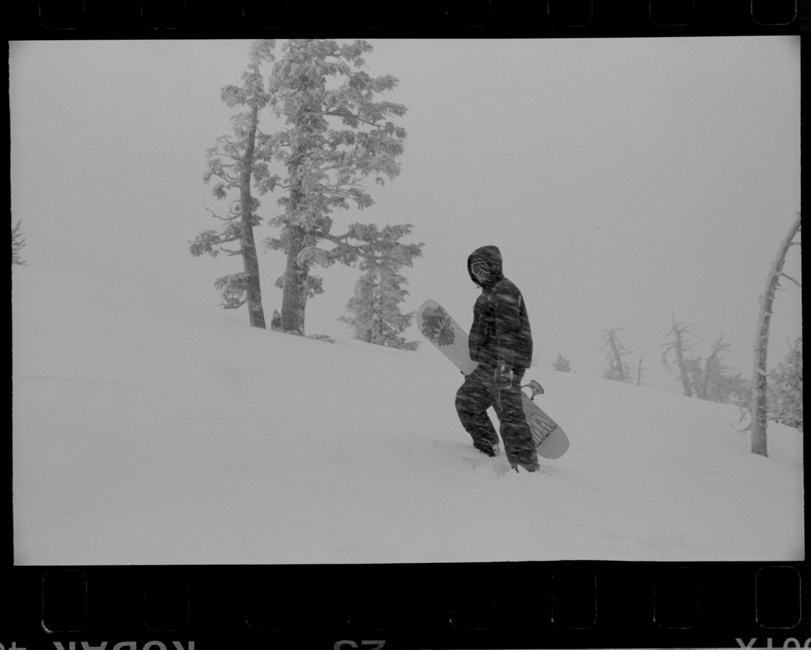
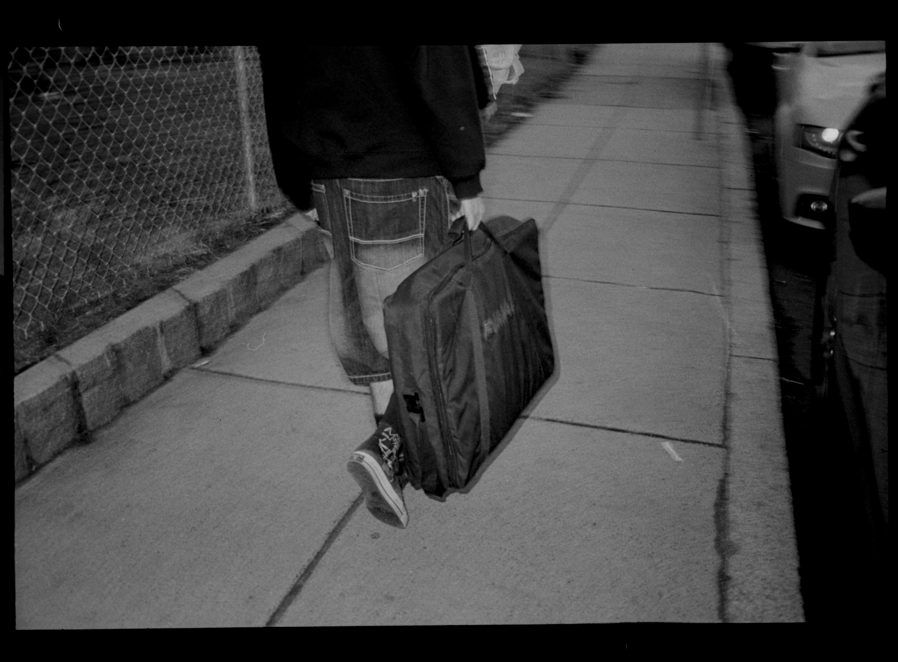
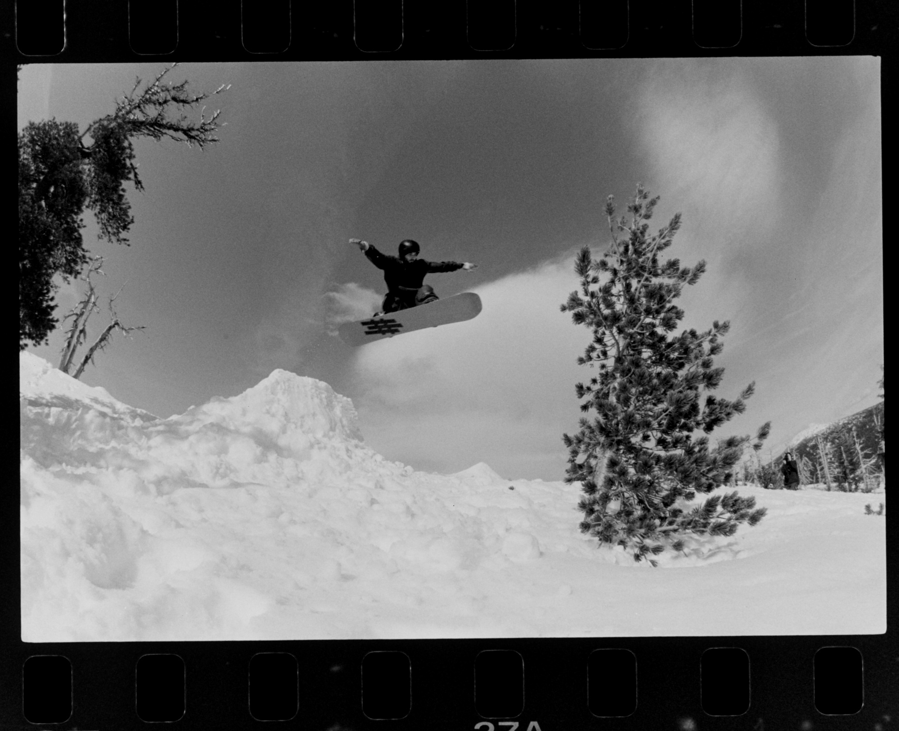

Custom 35mm film digitization setup using a DSLR camera, macro lens, and 8020 aluminum frame
To save cost and time on film processing, I built a DSLR scanning setup to digitize my 35mm film negatives in-house. The rig is built around a frame of extruded 8020 aluminum extrusion that holds a camera mount with a bubble level for precise, repeatable alignment. A backlit light tray illuminates the negative from below while the DSLR and macro lens capture a high-resolution image directly above. Each shot is then inverted and edited in post-processing before being saved to my digital archive. The result is full control over the scanning process at a fraction of the cost of lab scanning services.







